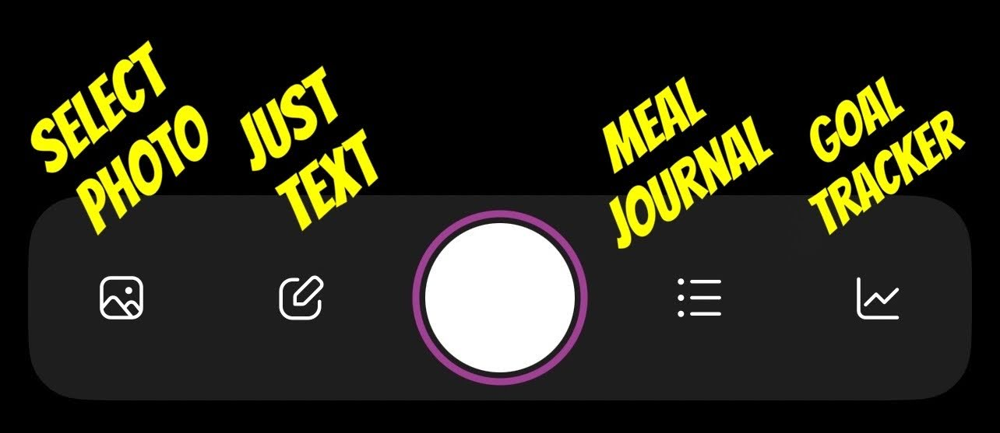

Capture
iPhone nutrition companion
Check a meal fast. Keep the explanation honest.
Quick Meal Check analyzes meal photos or text descriptions, estimates calories and macros, and keeps recent entries in a lightweight journal so you can review your habits without opening a spreadsheet.
- Photo and text-based meal analysis
- Meal journal with recent-history review
- Body metrics and calorie-goal tools

What it feels like
Fast capture, visible progress, and results that stay reviewable instead of disappearing into one-off chat output.
Review
See calories, protein, carbs, and fat in a clean summary.
Track
Keep a short rolling history and compare recent patterns.
Features
Built for quick checks, not calorie-accounting theater.
Photo analysis
Capture a meal, add context when needed, and send it through the two-step identification and nutrition flow.
Manual meal entry
If a photo is inconvenient, describe the meal in text and get the same style of macro estimate.
Meal journal
Saved entries stay available in a recent journal so you can review and compare what you have logged.
Body metrics
Store weight, height, age, sex, activity level, and calorie targets locally on-device for quick reference.
Subscription-gated analysis
Authentication and subscription status unlock the paid analysis workflow while keeping entitlement checks on the backend.
Privacy-first surface area
No ad SDKs, no social feed, and no unnecessary tracking layer bolted on top of a simple utility app.
Screenshots
Core flows at a glance.



Privacy and trust
Be direct about what the app does with data.
Quick Meal Check uses account sign-in, subscription checks, and cloud-backed AI analysis. The public privacy page should make that plain: meal photos and text are submitted for processing, recent meal history is stored locally on-device, and purchase status is used to unlock paid features.
Important note
Quick Meal Check provides estimates, not medical advice.
Nutrition outputs depend on image quality, meal context, and user-provided notes. The app is a convenience tool for meal estimation and trend review, not a diagnostic or treatment product.